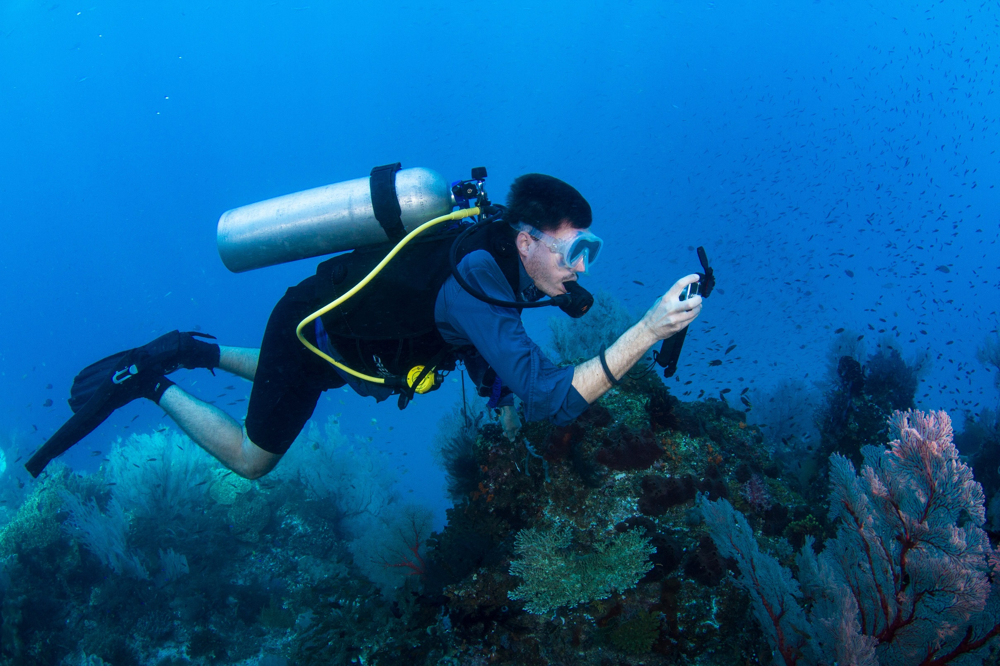

I am a Computer Science master’s student at the University of Pennsylvania and am launching a career change from earth science research to technology.
I completed a PhD at Stanford University in Oceanography as a National Science Foundation Graduate Research Fellow, where I designed, implemented, and managed complex projects through completion. My research focused on the carbon system in the Ross Sea, Antarctica, which involved computer modelling and analyzing large satellite-derived and oceanographic datasets. I also designed and built autonomous instruments for ocean acidification research on coral reefs.
As a scientist, I learned how to persevere through major roadblocks and developed relevent skills in collaboration, communication, and problem solving. Since pursuing my Masters in Computer Science, I have improved my technical skills through coursework and projects and am seeking an internship position that will allow me to tackle interesting problems in a collaborative environment.
I am also an experienced educator and recently taught Computer Science to high school students at the American International School Chennai in India. Collaborating with a Stanford professor, my Computer Science course was based on CS 106A, taken by over 1000 students at Stanford each year.
On the personal front, I was born in the US and grew up in India and Madagascar. I have also lived in Mali and South Korea. I love to go backpacking and play soccer.
